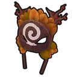

Autumnal Mask
Mask · Tier 6 · Level 16
Excels at blending in the woods, but was nevertheless disowned by rangers. It was a bit too tempting to shoot at.
Economy
Value
45,000
Crafting time
45min
Merchant XP
16,500
Workers: Reaper 1, Herbalist 8
Recipe


Blueprint milestones
7
Crafting time -25%
16
-28 Herbs
30
Unlocks blueprint: Stern Sentinel
45
Value +25%
70
Quality chance +1